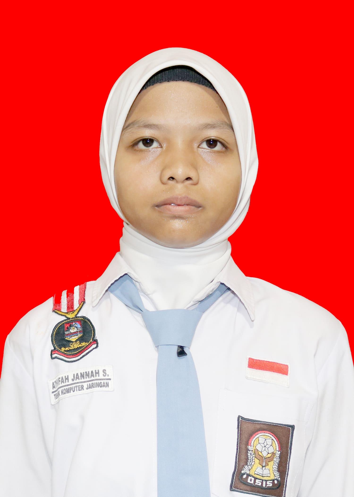

|
 |
Nama : Athifah Jannah Sholihah Nomor WhatsApp : 085800489660 Email : atifahjannah11@gmail.com Domisili : Sragen, Jawa Tengah |
Deskripsi DiriSeorang mahasiswi semester 2 di D3 Teknik Informatika UNS yang sedang mempelajari pemrograman web. Memiliki kemampuan untuk bekerja secara mandiri maupun dalam tim, serta memiliki motivasi untuk terus belajar dan berkembang. Rasa penasaran adalah bahan bakar utama saya, yang mendorong saya untuk terus mencari tahu hingga rasa penasaran itu terpuaskan. |
Riwayat Pendidikan
|
Kelebihan
|
|